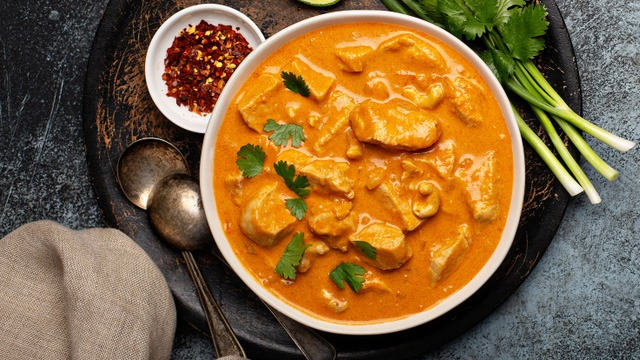

Yellow Chicken Curry with Coconut Milk

Description:
This is my very special curry recipe, handed down to me from my grandmother. I grew up in the British Virgin Islands in
the Caribbean, and have eaten a lot of curry in my life, in every form you can imagine! This particular dish consists of
a yellow curry sauce (a little bit spicy), with chicken and potatoes which is served over jasmine rice. You can also use
it as filling inside of a roti skin (minus the rice)..
Ingredients:
- 3 ½ cups water, or more as needed
- 2 cups uncooked jasmine rice
- 2 tablespoons vegetable oil
- 1 ½ pounds boneless, skinless chicken thighs, cubed
- 4 medium russet potatoes, peeled and cubed
- 1 teaspoon salt, or more to taste
- 1 teaspoon ground black pepper, or more to taste
- 1 (13.5 ounce) can coconut milk
- 4 cloves garlic, chopped
- 4 tablespoons yellow curry powder, or more to taste
- 2 tablespoons soy sauce
- 1 ½ tablespoons white sugar, or more to taste
- 1 ½ teaspoons garlic powder
- 1 ½ teaspoons ground cumin
- 1 teaspoon ground ginger
- ½ teaspoon red pepper flakes
Directions:
- Bring 3 1/2 cups water to a boil in a medium saucepan. Stir in rice, cover, and reduce heat to low. Simmer until all of
the water has been absorbed, about 15 minutes. Taste the rice; if it is still too firm, add a few more tablespoons of
water. Remove from the heat, cover, and set aside.
- While the rice is cooking, heat oil in a large wok over medium-high heat. Add chicken, potatoes, 1 teaspoon salt, and 1
teaspoon pepper; cook and stir until chicken is firm and no longer translucent, 5 to 7 minutes.
- Stir in coconut milk. Add garlic, 4 tablespoons curry powder, soy sauce, 1 1/2 tablespoons sugar, garlic powder, cumin,
ginger, and red pepper flakes; stir with a wooden spoon until well mixed. Bring to a boil. Cover, reduce heat to low,
and simmer until potatoes are very soft and curry aroma is strong, 15 to 20 minutes.
- Uncover the curry and turn off heat. Taste and adjust curry powder, sugar, salt, and pepper as needed. Let sit for 5
minutes before serving over the cooked rice.